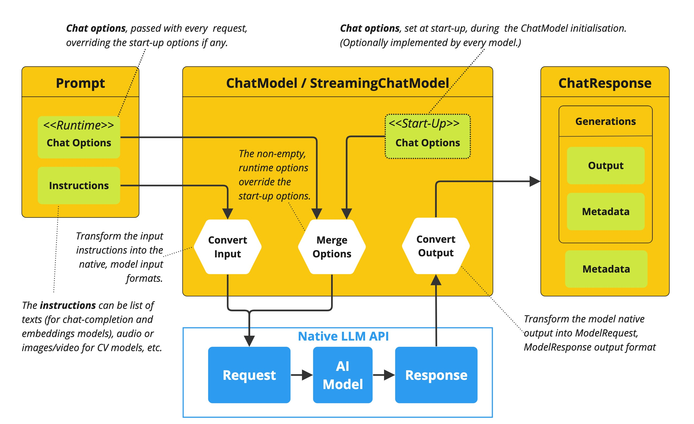
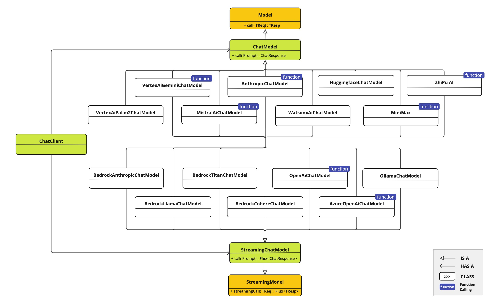
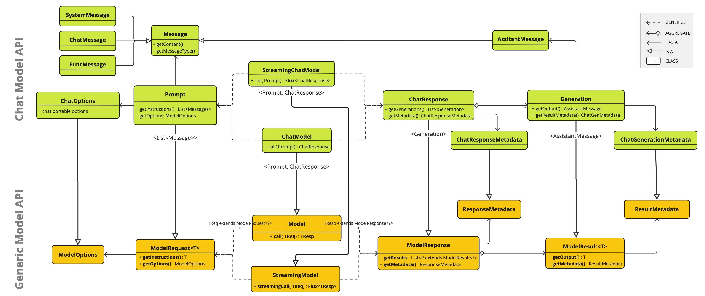

Chat Model API
The Chat Model API offers developers the ability to integrate AI-powered chat completion capabilities into their applications. It leverages pre-trained language models, such as GPT (Generative Pre-trained Transformer), to generate human-like responses to user inputs in natural language.
The API typically works by sending a prompt or partial conversation to the AI model, which then generates a completion or continuation of the conversation based on its training data and understanding of natural language patterns. The completed response is then returned to the application, which can present it to the user or use it for further processing.
The Spring AI Chat Model API is designed to be a simple and portable interface for interacting with various AI Models, allowing developers to switch between different models with minimal code changes. This design aligns with Spring’s philosophy of modularity and interchangeability.
Also with the help of companion classes like Prompt for input encapsulation and ChatResponse for output handling, the Chat Model API unifies the communication with AI Models. It manages the complexity of request preparation and response parsing, offering a direct and simplified API interaction.
API Overview
This section provides a guide to the Spring AI Chat Model API interface and associated classes.
ChatModel
Here is the ChatModel interface definition:
public interface ChatModel extends Model<Prompt, ChatResponse> {
default String call(String message) {// implementation omitted
}
@Override
ChatResponse call(Prompt prompt);
}
The call method with a String parameter simplifies initial use, avoiding the complexities of the more sophisticated Prompt and ChatResponse classes. In real-world applications, it is more common to use the call method that takes a Prompt instance and returns an ChatResponse.
StreamingChatModel
Here is the StreamingChatModel interface definition:
public interface StreamingChatModel extends StreamingModel<Prompt, ChatResponse> {
@Override
Flux<ChatResponse> stream(Prompt prompt);
}
Prompt
The Prompt is a ModelRequest that encapsulates a list of Message objects and optional model request options. The following listing shows a truncated version of the Prompt class, excluding constructors and other utility methods:
public class Prompt implements ModelRequest<List<Message>> {
private final List<Message> messages;
private ChatOptions modelOptions;
@Override
public ChatOptions getOptions() {..}
@Override
public List<Message> getInstructions() {...}
// constructors and utility methods omitted
}
Message
The Message interface encapsulates a textual message, a collection of attributes as a Map, and a categorization known as MessageType. The interface is defined as follows:
public interface Message extends Node<String> {
String getContent();
List<Media> getMedia();
MessageType getMessageType();
}
public interface Node<T> {
T getContent();
Map<String, Object> getMetadata();
}
The Message interface has various implementations that correspond to the categories of messages that an AI model can process. Some models, like OpenAI’s chat completion endpoint, distinguish between message categories based on conversational roles, effectively mapped by the MessageType.
For instance, OpenAI recognizes message categories for distinct conversational roles such as system,user, function or assistant.
While the term MessageType might imply a specific message format, in this context it effectively designates the role a message plays in the dialogue.
For AI models that do not use specific roles, the UserMessage implementation acts as a standard category, typically representing user-generated inquiries or instructions. To understand the practical application and the relationship between Prompt and Message, especially in the context of these roles or message categories, see the detailed explanations in the Prompts section.
Chat Options
Represents the options that can be passed to the AI model. The ChatOptions class is a subclass of ModelOptions and is used to define few portable options that can be passed to the AI model. The ChatOptions class is defined as follows:
public interface ChatOptions extends ModelOptions {
Float getTemperature();
void setTemperature(Float temperature);
Float getTopP();
void setTopP(Float topP);
Integer getTopK();
void setTopK(Integer topK);
}
Additionally, every model specific ChatModel/StreamingChatModel implementation can have its own options that can be passed to the AI model. For example, the OpenAI Chat Completion model has its own options like presencePenalty, frequencyPenalty, bestOf etc.
This is a powerful feature that allows developers to use model specific options when starting the application and then override them with at runtime using the Prompt request:

ChatResponse
The structure of the ChatResponse class is as follows:
public class ChatResponse implements ModelResponse<Generation> {
private final ChatResponseMetadata chatResponseMetadata;
private final List<Generation> generations;
@Override
public ChatResponseMetadata getMetadata() {...}
@Override
public List<Generation> getResults() {...}
// other methods omitted
}
The ChatResponse class also carries a ChatResponseMetadata metadata about the AI Model’s response.
Generation
Finally, the Generation class extends from the ModelResult to represent the output assistant message response and related metadata about this result:
public class Generation implements ModelResult<AssistantMessage> {
private AssistantMessage assistantMessage;
private ChatGenerationMetadata chatGenerationMetadata;
@Override
public AssistantMessage getOutput() {...}
@Override
public ChatGenerationMetadata getMetadata() {...}
// other methods omitted
}
Available Implementations
The ChatModel and StreamingChatModel implementations are provided for the following Model providers:

Chat Model API
The Spring AI Chat Model API is build on top of the Spring AI Generic Model API providing Chat specific abstractions and implementations. Following class diagram illustrates the main classes and interfaces of the Spring AI Chat Model API.
